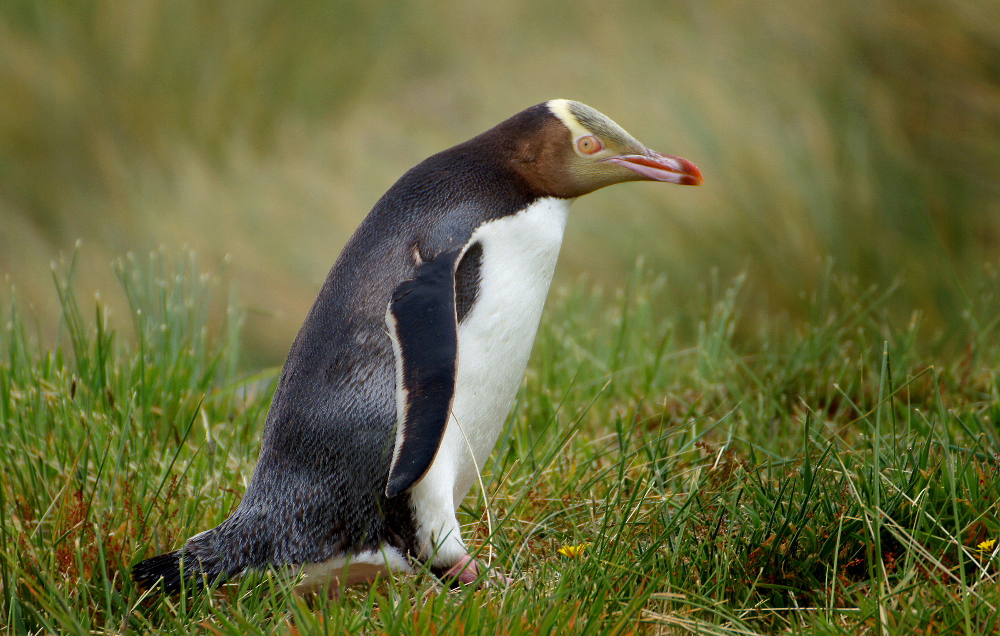
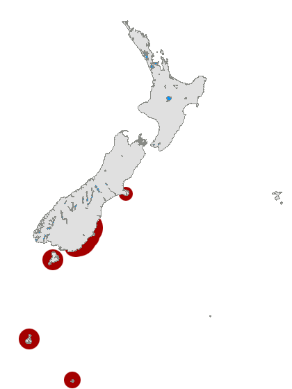

Informations Générales
Le manchot à œil jaune (Megadyptes antipodes) est l'unique espèce vivante du genre Megadyptes. Une espèce plus petite récemment éteinte, le manchot Waitaha (M. waitaha), a été décrite en 2009.
Le manchot à œil jaune (Megadyptes antipodes) est l'unique espèce vivante du genre Megadyptes. Une espèce plus petite récemment éteinte, le manchot Waitaha (M. waitaha), a été décrite en 2009.
| Illustration | Nom | Habitat naturel | Fait insolite |
|---|---|---|---|
|  |
Manchot antipode
Megadyptes antipodes |
 |
Le manchot antipode est considéré comme l'une des espèces de manchots les plus rares au monde.
Il est répertorié sur la liste rouge de l'UICN en tant qu'espèce en danger.
Il a été inclus pour la première fois sur la liste en 1988,
où il était classé comme une espèce menacée. Son statut a ensuite
été modifié pour "en danger" en l'an 2000.
|